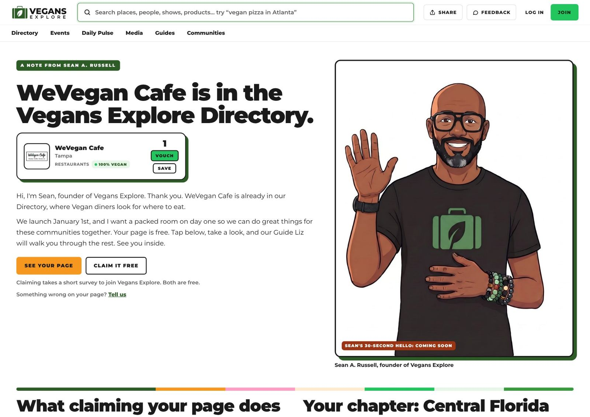
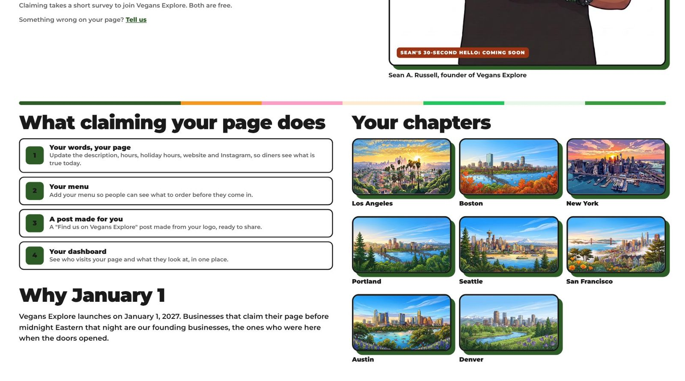
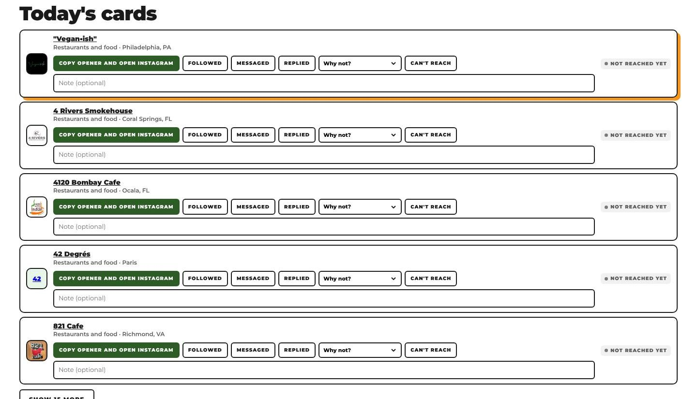
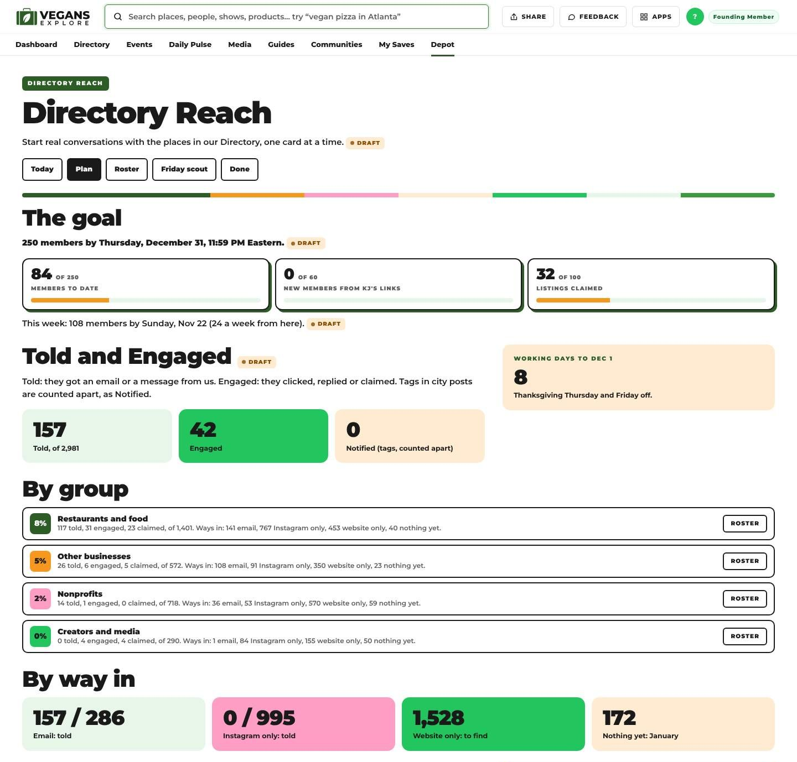
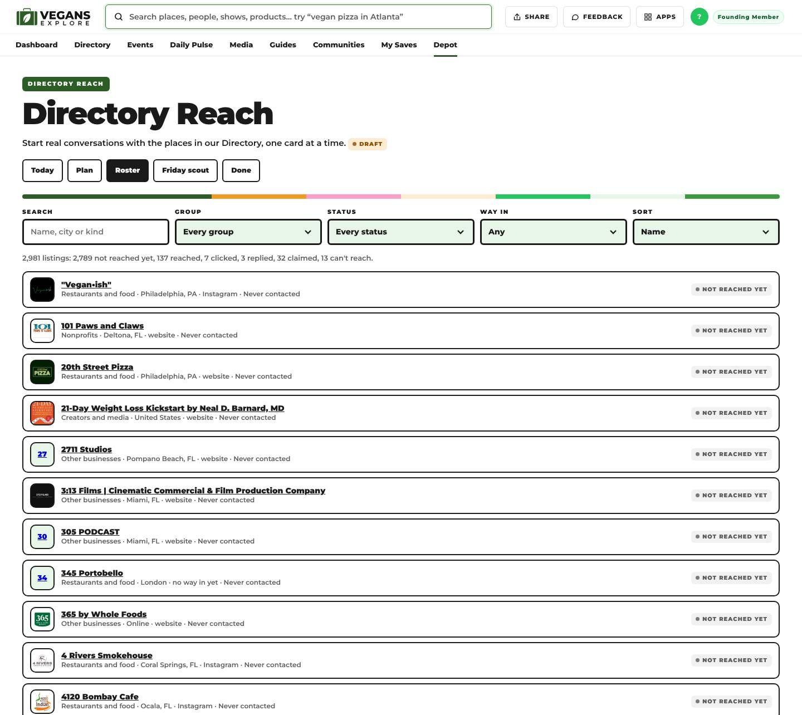

Every listing hears from us, and 250 members are through the door by December 31
One push, five groups, one page for each, and KJ on Instagram. This walks through every part, in the order a person meets it.

2,981 listings, and four ways in
We count two numbers, never mixed: Told (an email delivered or a message sent) and Engaged (a click, a reply or a claim). A tag in a city post counts apart, as Notified.
Everyone lands on their group's page, with their own listing on it
All five are locked and live. Each Open button shows a real example.
Their own listing first, one orange button, your words beside it

vegansexplore.com/hello/restaurants, as WeVegan Cafe sees it
What claiming does, and the city we represent beside it
The page finds the chapter from the address. A chain sees every chapter it is in; someone online sees our chapters and a link to all of them.

Next Level Veggie Grill: what claiming does, and its eight chapters
From first message to a member with a claimed page
Orange is the person's part. Every click is credited to the link that brought them, so we know what works.
Only checked addresses, a plain note from you, and one follow-up
Her console opens on today's first card
Four taps per person: Followed, Messaged, Replied, Can't reach. A note only when it matters.

Today's cards: copy the opener, open their Instagram, tap what happened
Low caps, rising slowly, and a hard stop on any warning
Instagram publishes no limits and blocks accounts that look like spam; one block stops everything for a day or two. The console refuses anything past the cap. On a warning she stops new follows and messages and tells Logan.
Everyone who follows or writes to us gets the right invitation
Our system cannot see who follows us or read Instagram messages, so KJ's quick add and taps are the record. Email replies come in by themselves.
The volume KJ cannot do by hand runs behind her
The plan, the week, the roster and the record, in one place
Only you and KJ can open it. It is on the branch, not live, until you say so.

Plan: 84 of 250 members, KJ's 60, 32 of 100 claimed
Every listing, where it stands, one click from its history
Not reached, reached, clicked, replied, unsubscribed, claimed, can't reach. Each row links to its Directory page and opens every email, reply, tap and claim we have for it.

The roster: 2,981 listings, filtered by group, status and way in
Your part is short, and it comes first
From today to 250
Orange needs you or KJ. Everything else is Logan's.